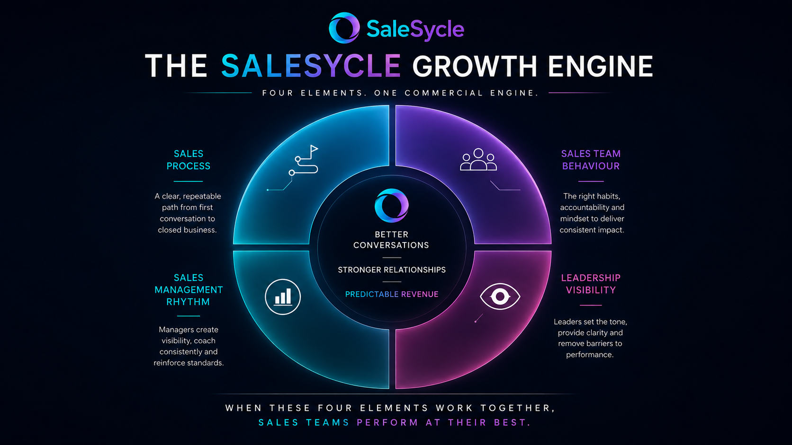

SaleSycle helps established B2B organisations with stagnant or inconsistent growth reset their commercial rhythm. We align leadership, strengthen sales management discipline, and elevate frontline accountability so better sales team performance leads to better revenue performance.
Leadership messaging drifts, managers coach inconsistently, and sales teams fall back into old habits. SaleSycle rebuilds performance by aligning the top, equipping the middle, and elevating the front line with measurable standards.
We help organisations move from inconsistent effort and heroic selling into a repeatable commercial system that is visible, coached, measured, and sustainable.
This is the operating system behind SaleSycle. When the core components of the commercial environment work together, the sales team can perform more consistently and revenue becomes more predictable.

The Growth Engine connects sales process, sales team behaviour, sales management, and leadership visibility around a stronger customer conversation rhythm.
Clear stages, stronger discovery, better business cases, and consistent progress through the deal cycle.
Frontline accountability, practical selling habits, and more confidence in live customer conversations.
Coaching cadence, deal quality review, pipeline discipline, and measurable reinforcement from managers.
Senior leaders setting the tone, backing the standards, and removing ambiguity around what good looks like.
Our AIDE methodology gives structure to the transformation journey and keeps the work practical, visible, and commercially grounded.
If your team has capability but results still feel inconsistent, SaleSycle helps you turn commercial effort into a structured growth engine.
Predictable performance, built sustainably. We transform sales teams from the inside out.
Let’s discuss how we can help your sales team achieve sustainable, predictable growth.
Get in touch →